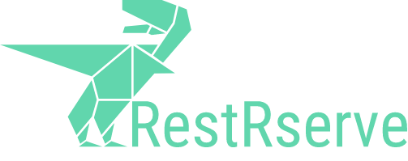

RestRserve 
RestRserve is an R web API framework for building high-performance AND robust microservices and app backends. With Rserve backend on UNIX-like systems it is parallel by design. It will handle incoming requests in parallel - each request in a separate fork (all the credits should go to Simon Urbanek).
Quick start
Creating application is as simple as:
library(RestRserve) app = Application$new() app$add_get( path = "/hello", FUN = function(request, response) { response$set_body("Hello from RestRserve") }) backend = BackendRserve$new() backend$start(app, http_port = 8080)
Now you can type http://localhost:8080/hello in your favorite browser and see (surprisingly!) Hello from RestRserve.
Learn RestRserve
- follow quick start guide on http://restrserve.org/ for more details.
- check out “Articles” section on http://restrserve.org/
- browse examples on https://github.com/rexyai/RestRserve
Features
- Easy to install, small number of dependencies
- Fully featured http server with the support for URL encoded and multipart forms
- Build safe and secure applications - RestRserve supports https, provides building blocks for basic/token authentication
- Concise and intuitive syntax
- Raise meaningful http errors and allows to interrupt request handling from any place of the user code
- Comes with many examples - see
inst/examples - Saves you from boilerplate code:
- automatically decodes request body from the common formats
- automatically encodes response body to the common formats
- automatically parses URI templates (such as
/get/{item_id}) - helps to expose OpenAPI and Swagger/Redoc/Rapidoc UI
- It is fast!

Installation
From source
remotes::install_github("rexyai/RestRserve")
Docker
Automated docker builds from docker-hub: https://hub.docker.com/r/rexyai/restrserve/
Contributing
Guidelines for filing issues / pull requests - CONTRIBUTING.md.
Acknowledgements
- Simon Urbanek (@s-u) for awesome Rserve and all the work on R itself and on his other packages
- Jeff Allen (@trestletech) for his work on Swagger UI in plumber (from where we took inspiration for our implementation)
-
Brodie Gaslam (@brodieG) for help with understanding on how to get traceback from try-catch function calls. Also thanks Hadley Wickham (@hadley) for
evaluate::try_capture_stackfunction which we use for this purpose.
Known limitations
- RestRserve is primarily tested on UNIX systems. While it works natively on Windows please don’t expect it to be as performant as on UNIX-like systems. If you really want to use it on Windows - consider to use Windows Subsystem for Linux.
- Keep in mind that every request is handled in a separate process (fork from a parent R session). While this feature allows to handle requests in parallel it also restricts reuse of certain objects which are not fork-safe (notably database connections, rJava objects, etc)